Phase 0 restored the environment (80 seeded listings, real photography pool, media normalized), then the plan's verification tasks ran: V1 coverage gate, V2 browser QA matrix, V3 load baseline, R2 portable smoke. Plus the git-hygiene fixes you asked for.
| Issue | Fix | Verified |
|---|---|---|
| Commit messages were bare UUIDs — unauditable | All 16 workspace commits reworded to Task-ID messages (Task 1: verification pass… … Task 13: Brian plan loop 2…) via a hash→message map; backup refs + reflog pruned | git log --oneline — every commit carries its task ID; repo commits were already clean (F1→C3) |
.env contains a DATABASE_URL — must never ship in an export | File deleted; purged from every commit in history (index-filter rewrite); .env / .env.* gitignored; both deliverable zips re-checked — only .env.example inside | git log --all -- .env → 0 commits; git grep DATABASE_URL $(git rev-list --all) → 0 hits |
git refuses to run — dubious ownership | safe.directory set for the workspace root and the repo (global config) | All subsequent git operations ran without stalls |
| App | Coverage | Bar |
|---|---|---|
| agents | 89.9% | ≥80% ✓ |
| inquiries | 98.1% | ≥80% ✓ |
| listings | 95.2% | ≥80% ✓ |
No new tests were needed to clear the bar. ENABLE_G_COV=1 is now permanent in scripts/gate.sh — coverage regressions fail the gate from today.
Headless Chromium via agent-browser. Every page captured at 360, 810 and 1280 px. The HTMX enquiry pipeline was exercised end-to-end at each viewport (form → success partial), and the agent dashboard was reached with a genuine UI login — which also validated the credential bugfix below. Screenshots live outside the repo in download/gabriel-homes-qa/.
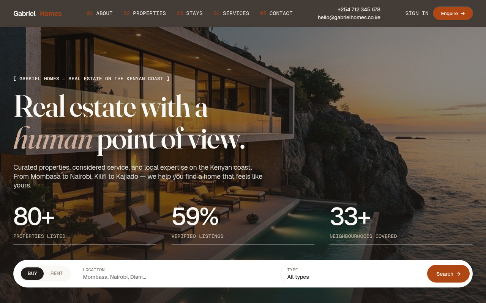
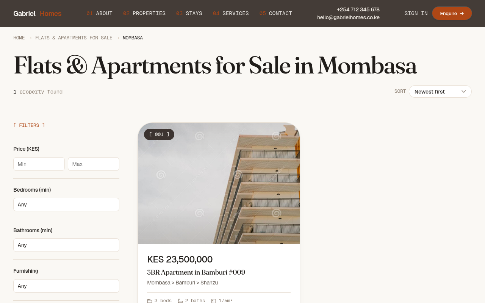
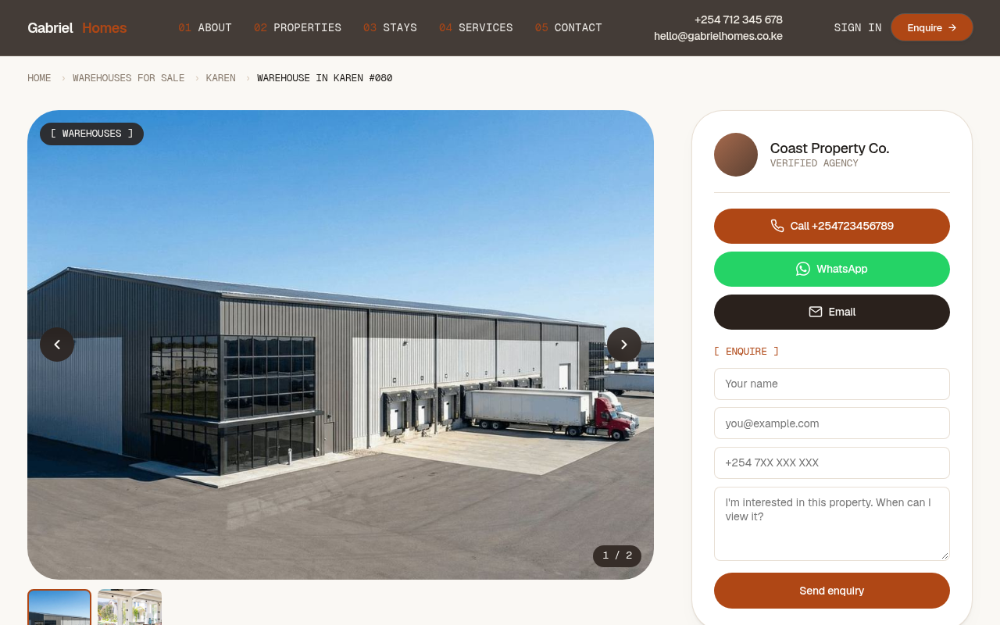
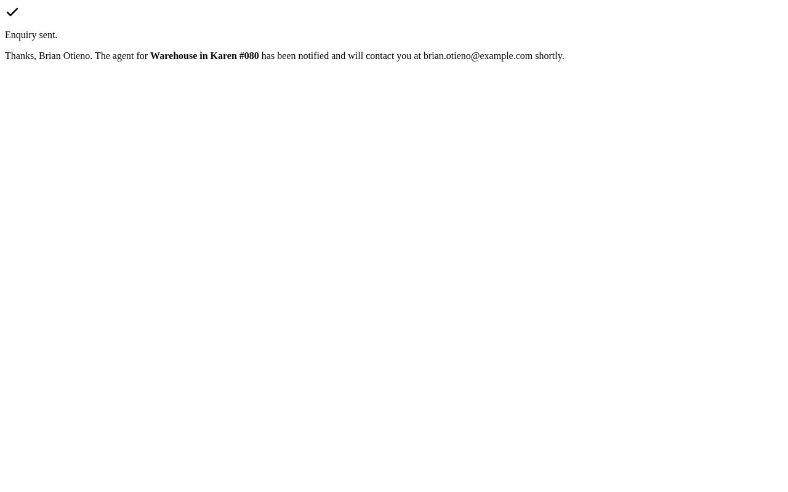
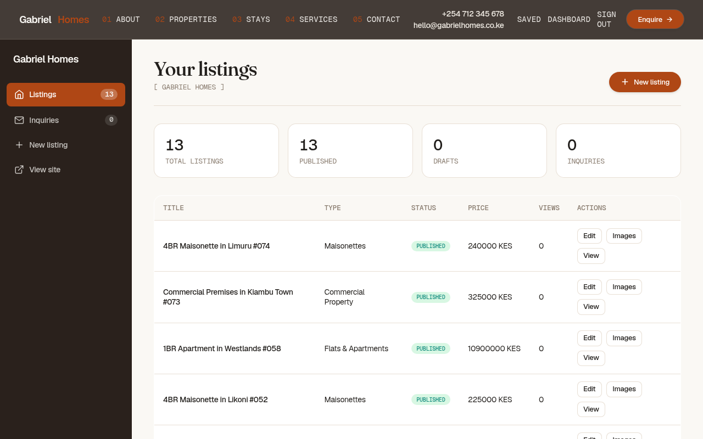
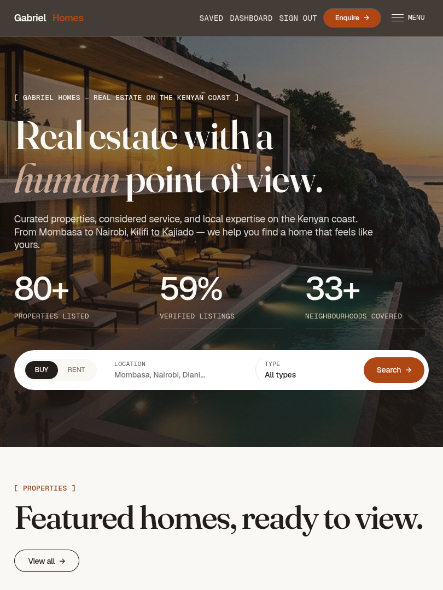
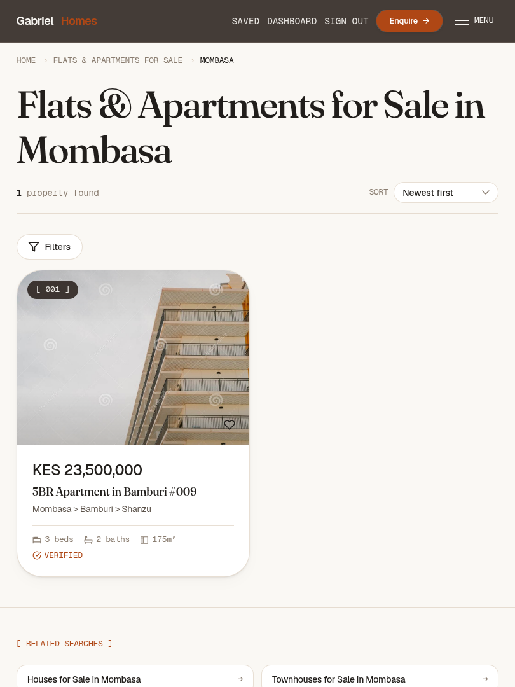
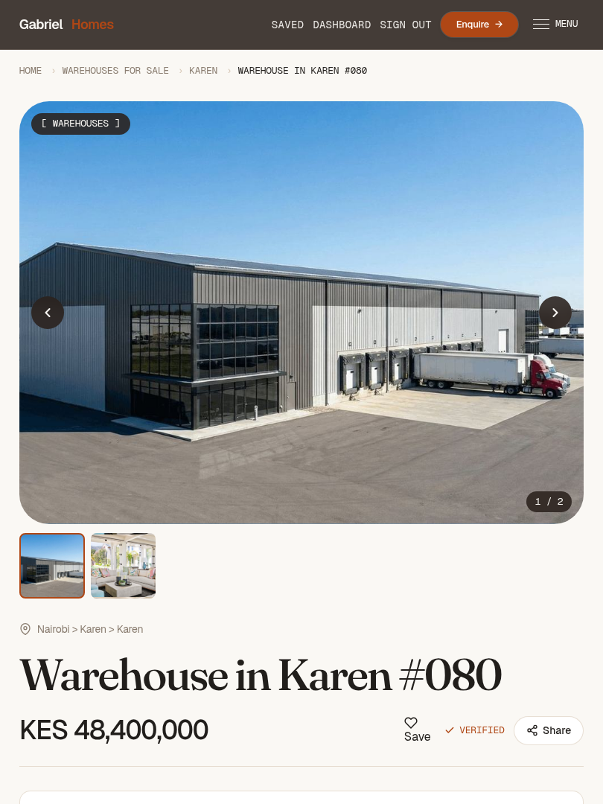
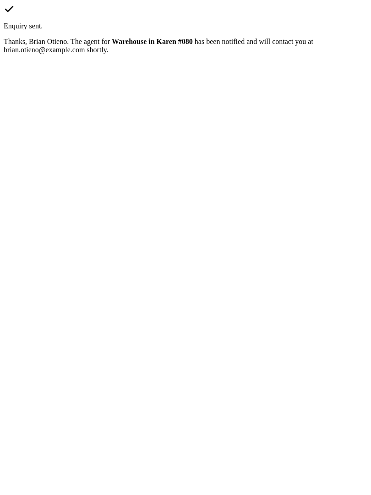
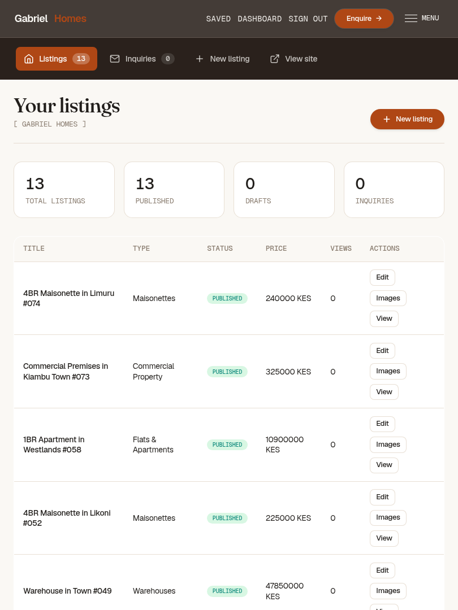
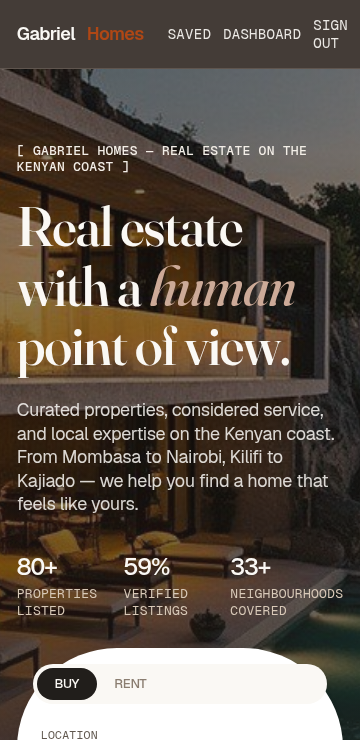
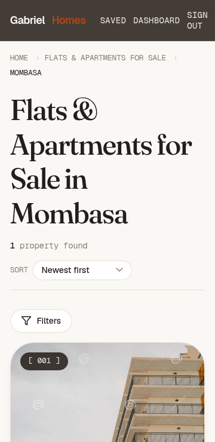
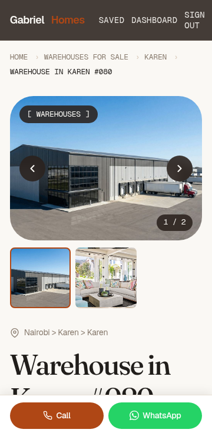
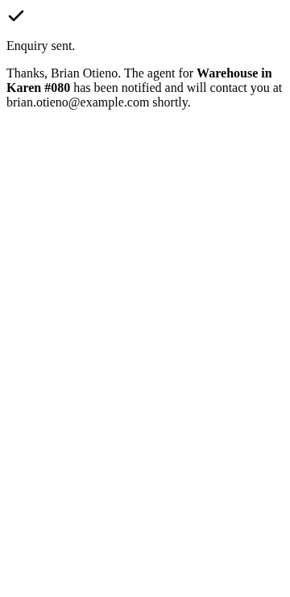
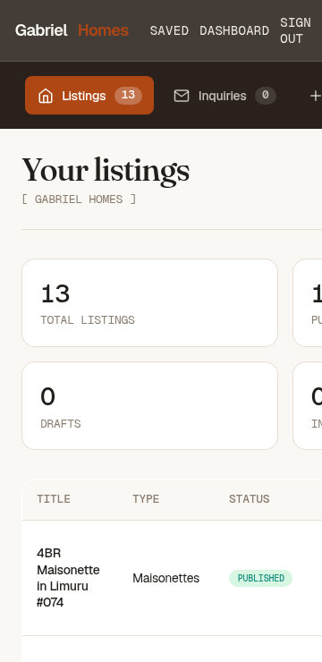
| Target | Throughput | p50 | p95 | p99 | Non-200 |
|---|---|---|---|---|---|
/ (home) | 23.9 req/s | 827 ms | 1008 ms | 1104 ms | 0 |
/listing/warehouse-in-karen-90/ | 32.3 req/s | 437 ms | 1619 ms | 2672 ms | 0 |
Read this correctly: these are Django dev-server numbers on a shared container — a baseline, not the bar. The plan's p95 < 500 ms target is judged on the 2 GB VPS with nginx + gunicorn at R1 (needs the VPS, O7). hey/ab aren't installed here (no sudo), so scripts/load_smoke.py (stdlib, same metrics) does the job until then.
| Check | Expect | Got |
|---|---|---|
| /, search pages (Mombasa sale, Nairobi rent), /agents/, /about/, sitemap, robots, login, /healthz/ | 200 | 9× 200 ✓ |
| /dashboard/ and /admin/ — logged out | 302 | 2× 302 ✓ |
| unknown listing slug | 404 | 1× 404 ✓ |
Usage on any environment: BASE_URL=https://your-domain bash scripts/smoke.sh — the staging tick happens right after the VPS lands (O7).
| Before | After | |
|---|---|---|
| What happened | seed_demo --clear created agency users with empty-string passwords; has_usable_password() can't see that state, so setup_accounts skipped initialization — the documented agent login was impossible and admin@ didn't exist | Seed sets an unusable password on create (S4 invariant: seed never mints credentials); setup_accounts treats empty-string passwords as uninitialized and performs the one-time demo set |
| Proof | UI login bounced, DB check: gabriel2026 → False | Real UI login reaches the dashboard; check_password True for both demo accounts; pytest 296 → 298 |
| Remaining | Owner | Why |
|---|---|---|
| R1 — fresh-VM deploy rehearsal (DEPLOY.md, end-to-end) | O7 — VPS access | Needs an Ubuntu VM; every deviation gets logged back into DEPLOY.md |
V3 — staging load numbers with hey | O7 — VPS access | Same VM as R1 |
| V4 — Lighthouse scores | Brian | Owner-run, bar set by owner |
| R3 — go-live sign-off | Brian | After R1 + owner inputs (domain, SMTP, WhatsApp, content) |
| D2/D5 — Postgres suite + restore drill | O11 — any machine with PG | One-liners ready in STATUS.md |